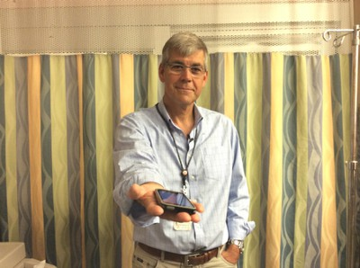

Encore is a free iOS concert app available on the App Store that lets you search for shows and by tickets by location, but also lets you save past concerts and few videos and images taken by the crowd at those shows. Our team was part of the 2013 cohort of The Next 36
Date:
2013 – present
Role:
iOS Developer and co-founder
Sensimat
Sensimat is a Bluetooth wheelchair mat that connects to an iOS device to track pressure reliefs performed by a wheelchair user with the goal being to improve adherence. Pressure reliefs help prevent the development of pressure ulcers, which can result in hospitalization or may even be fatal if left unchecked. The team ran a successful Indiegogo campaign in 2014.
Date:
2013 – present
Role:
Development (primarily iOS)
CIWA Tremor

Alcohol withdrawal syndrome (AWS) must be treated properly or it may result in permanent brain damage or death. At the same time, it is fairly common for alcoholics to try to get treatment drugs by faking the symptoms of withdrawal. AWS is characterized by a number of symptoms including hand tremor. Using the motion sensors in the iPhone I developed an application for Dr. Bjug Borgundvaag (Mount Sinai Hospital, Toronto, pictured above) based off of a paper clinical withdrawal assessment tool called the CIWA to quantitatively assess tremor rather than rely on a subjective visual assesment. The project recently received funding and further academic support to perform research and analysis.
Use this area of the page to describe your project. The icon above is part of a free icon set by Flat Icons. On their website, you can download their free set with 16 icons, or you can purchase the entire set with 146 icons for only $12!
Use this area of the page to describe your project. The icon above is part of a free icon set by Flat Icons. On their website, you can download their free set with 16 icons, or you can purchase the entire set with 146 icons for only $12!
Use this area of the page to describe your project. The icon above is part of a free icon set by Flat Icons. On their website, you can download their free set with 16 icons, or you can purchase the entire set with 146 icons for only $12!